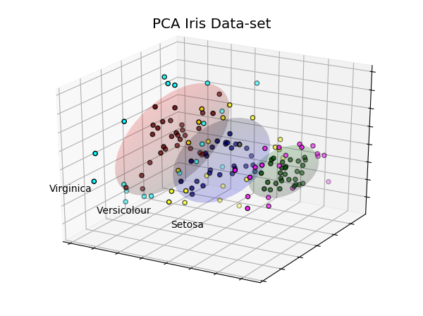

PCA Iris Data-set¶
This example is similar to the scikit-learn PCA example with Iris Data-set.
In this example, data within one standard deviation are colored red, green and blue, and contained within the ellipsoid boundaries. The complementary colors indicate data greater than one standard deviation.
import numpy as np
import matplotlib.pyplot as plt
from sklearn import decomposition, datasets
import s3dlib.surface as s3d
#.. PCA Iris Data-set
# 1. Define data to examine .........................................
iris = datasets.load_iris()
x, y = iris.data, iris.target
pca = decomposition.PCA(n_components=3)
pca.fit(x)
X = pca.transform(x)
Y = np.choose(y, [1, 2, 0]).astype(np.float)
# 2 & 3. Setup surfaces and plot ....................................
rgbC = ['r', 'g', 'b' ]
rgbD = [ [0.4,0,0], [0,0.3,0], [0,0,0.5] ]
rgbE = [ [0,1,1], [1,0,1], [1,1,0] ]
names = [ 'Setosa', 'Versicolour', 'Virginica' ]
fig = plt.figure(figsize=(6, 4.5))
ax = plt.axes(projection='3d')
for i in range(3) :
data = X[Y == i]
# setup surfaces .......
surface = s3d.SphericalSurface(3, color=rgbC[i], linewidth=0)
disArr,t = surface.svd(data)
surface.set_surface_alpha(0.1).shade()
# ......................
ax.text(X[y == i, 0].mean(),
X[y == i, 1].mean() + 2.5,
X[y == i, 2].mean(), names[i],
horizontalalignment='center')
dataT = data.T
colors = []
for val in disArr :
if val > 1 : colors.append(rgbE[i])
else : colors.append(rgbD[i])
ax.scatter(dataT[0], dataT[1], dataT[2], c=colors,edgecolor='k')
ax.add_collection3d(surface)
ax.w_xaxis.set_ticklabels([])
ax.w_yaxis.set_ticklabels([])
ax.w_zaxis.set_ticklabels([])
ax.view_init(elev=25, azim=120)
ax.set_title('PCA Iris Data-set', fontsize='x-large' )
fig.tight_layout()
plt.show()